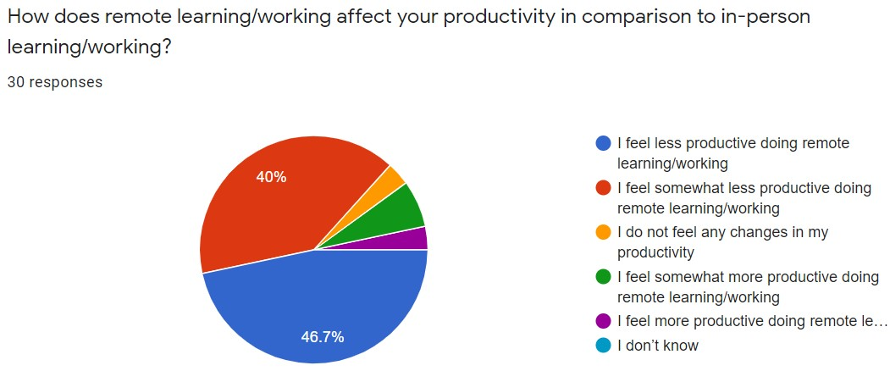
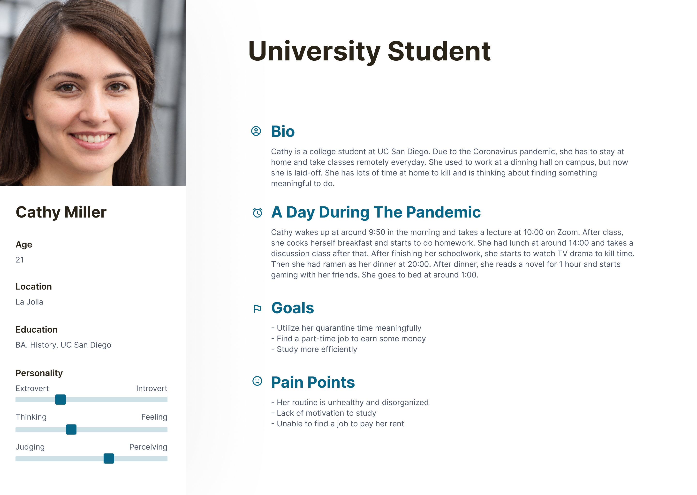

Scope User Research UI/UX Design Rapid Prototyping Tools Figma Team Asha Bacon, Megan Dinh, Phu Diec, Christian Lay-Geng, Jiayu Luo This app was created for DSGN 100: Prototyping.
Les études is an app that improves the social collaboration and engagement that is lost in remote learning for K-12 students by connecting them to college-student tutors.
With enforced stay-at-home orders to combat the COVID-19 pandemic, students must acclimate to a remote learning environment to keep up with their education. However, the transition to remote learning poses challenges, such as lack of motivation and social interaction, that can hinder a student’s ability to learn. Furthermore, younger students (K-12) may struggle to find help with school work if their parents are essential workers with less time in the day to spend with their children.
Social interaction is a critical component of learning. This is especially important for K-12 students who rely on social interaction and communication to enhance their understanding of lessons. Remote learning deprives students of this interaction: less socialization with peers and reduced communication with teachers.
K-12 students need to stay on top of their school work to maintain a good academic standing, but this can be a challenge in itself with all of the stressors associated with remote learning.
Given the remote learning environment, we conducted online secondary research pertaining to the topic of remote education and work. From this research, we found that remote learning has the potential to effect new, more effective learning methods, but the current format of remote learning, which involves ill-prepared attempts to quickly adapt to the remote environment, is neither accommodating nor effective to students.
Further research in online communities like Reddit and Facebook indicated a collective struggle amongst students regarding reduced communication with peers and teachers, loss of routine, dwindling motivation and concentration, and overall frustration with remote learning.
Surveys and Interviews
To gain more insight into how students are coping with the changes in learning, we distributed a survey to our targeted audience of K-12 and college students. We found that 26/30 participants felt some decline in their productive levels upon transitioning from in-person learning to remote learning.
We then contacted individuals who were willing to elaborate more on their remote learning experience through an interview. Interviewees consisted of both college students and a K-12 student. Listed below are some of our interviewees’ perspectives on remote learning:
Key Findings
From our interviews, we found that regardless of grade level, students collectively struggle with finding motivation to pay attention in classes and finish school work. This supports our findings from our online secondary and community research. Moving forward, we wanted to find a way for students to feel supported in their academics by focusing on how we can improve the interactions between students and in student-teacher communication.
We chose to focus on tutoring apps because remote learning is not very conducive for peer-to-peer and student-to-teacher interactions. Tutoring can create more engaging and collaborative learning environments that help students feel accountable for their academics and develop a rapport with fellow student tutors who may be more understanding of the student’s circumstances.
From our competitive analysis, we found that only one platform (K12) offers some form of group tutoring. We want our app to incorporate group tutoring because there are benefits to group learning, such as increased engagement with material and a solidified understanding of said material. Our app would allow students to work with their friends and peers under the guidance of a tutor to enhance collaboration. There are also very few platforms that offer an offline Q&A service, which is important to ensuring that students can still receive help even after tutoring sessions.
After consolidating the data from user research and our competitive analysis, we created two personas to reflect our main stakeholders: K-12 students and college students.
We believe that these personas reflect our problem statement and findings because a K-12 student wants to keep up with their education, but their motivation to do so might be hindered by the environment of remote learning. Thus, their main motivation for using our app would be to regain the benefits of collaborative learning.
Likewise, college students want to stay on top of their education, but external stressors like lost jobs can affect their learning abilities. Our app would give college students a flexible way to tutor in K-12 subjects that they have mastered to reduce financial stress.
With our main stakeholders in mind, we created storyboards to further explore where our potential app could be integrated within the user’s course of action.
Storyboard 1
This storyboard focuses more on how a K-12 student can be academically supported by a tutor to gain more motivation to do well in class and work with her tutor.
Storyboard 2
This storyboard focuses on how college students can use their education to help other students.
Key Findings
We presented our storyboard to our targeted audience for feedback. Our storyboards resonated with all four of our interviewees who could relate to the struggle of balancing school obligations with environmental and personal factors, such as distractions or bills. They identified our potential solution as a platform for students to reach out to tutors to help them with their remote learning experiences. There was also concern about how tutors would be verified of their qualifications to tutor, so we iterated on these storyboards to include more details about how a tutor can be verified.
We each created a paper prototype that emphasized themes of collaboration and engagement.
Paper Prototypes 1 & 2
Left: The main point of this prototype is the ability to easily access video calls and chat rooms, which allow collaborative interaction with digitally uploaded materials. It was inspired by one interviewee’s frustration with having to use different links to enter Zoom meetings and no apparent way to interact with material besides screen share.
Right: This prototype sports a minimal layout with an ability to submit questions in multiple mediums for user freedom. It was inspired by our secondary research and interviewees who claimed that Zoom’s interface was confusing and difficult to use.
When we reconvened, we created a digital lo-fi prototype that used the key components of each paper prototype: shareable materials, simple interface, reward system, tutor-student rapport, and a question forum.
To address the concerns about tutor qualifications, we also incorporated an extensive tutor application in the sign-up process.
We conducted user testing on our prototypes remotely using Figma. Users were given the task of creating an account, joining a tutor session, and checking the question forum. Afterwards, all five users noted that the overall app felt cohesive and conducive to a collaborative remote-learning environment. However, two users had issues with some of our features:
Left: When filling out the availability on one’s profile, there is very little room on the screen to fill out the given calendar.
Right: Our app has several functionalities that might not be apparent to the user without browsing the hamburger menu.
Although we initially strived for a simple layout, we also had to consider the critical functions of our app. Given all of our app’s features, we found that users will have difficulty navigating our app if we continue to neglect the size limitations of the screen. We also found that prefacing our app with the context of being a “tutoring app” may not provide users with enough information to use the app.
Our next step was to refine the functionality and layout of the screens for better user flows and create an onboarding screen to ease users into our app.
We gained additional feedback from user testing with five K-12 students who helped us refine the functionality of our app. They found the onboarding pages informative, but they confirmed our suspicions about the functionality of the app.
As a member of the Les Etudes team, I learned how the ambition to include an extensive amount of functionality to the app is achievable, but this requires consideration of the screen dimensions. I appreciated how my teammates and I embodied the attitude of “Start early, Start often.” If I were to redo the entire process, I would try to assess the other relationships between COVID-19 and education and how other platforms besides interactive tutoring can appease the concerns of educators specifically.
If given more time and resources, we launch this app into the app store and observe how students engage with remote learning. With news of summer and fall classes continuing the practices of remote learning, we would be interested in learning how students will further acclimate to this remote environment. If students can reclaim a greater locus of control and develop sustainable learning habits by using our app, we would consider our app successful.
Visit Les études!